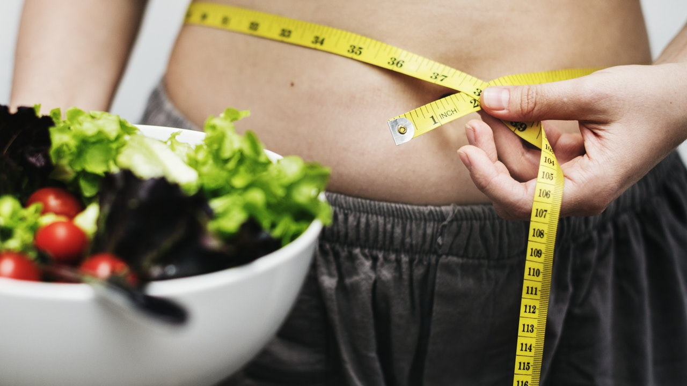

Nasıl Kilo Verilir?
20/12/2018 | Okuma Süresi: 5dk

Yazıyı okurken güzel bir müzik dinlemek istersen buraya tıkla.
Öncelikle bilmen gereken tek şey -eğer bir bir hastalığın yoksa(hormonal gibi)- bunu başarabileceğindir .
Eğer bir şeyi başaramamışsan yeterince istememişsin demektir. Bir insanın isteyipte başaramayacağı hiçbir şey yoktur.
Peki sen başarmak istiyor musun? Cevabın evetse yazdıklarımı dikkatlice oku.
Fazla kilonun ana sebepleri; çok yemek, sağlıksız yemek, yeterince hareketli bir hayatımızın olmaması.
Aslına bakarsak bunları düzene koyarsak çok kolay bir şekilde kilo vermeye başlar ideal kilomuza ulaşırız.
Türk kültüründe yemek yemek çok öenmli bir yere sahip. Sabah kahvaltısından tut gece yatmadan öncesine kadar yemek yemekle uğraşıyoruz.
Yediğimiz yiyecekler hem çok yağlı hem de karbonhidrat açısından inanılmaz zenginler. Sabah poaça ve simit, öğlen dönerler hamburgerler
akşam sağlıklı diye yediğimiz bol yağlı, kalorili yiyecekler, yetmez üstüne tatlı olmalı akşam bide meyve yedik mi tamam bu iş. Daha öğün
aralarında yediğimiz bisküvi ve kuruyemişler var. Hal böyle olunca kilo almamak mümkün değil.
Sağlıklı ve fit bir yaşam sürmek istiyorsak hayatımıza çeki düzen vermek zorundayız. Ben bi 10 kilo vereyim diyeti bırakırım olmaması lazım.
Her zaman aynı düzen devam etmeli, diyet demek yerine bu artık benim yaşama biçimim diyip kabullenmeliyiz.
Kilo Vermek İçin Yapılması Gerekenler;
- Aldığınız kalori miktarı ihtiyacından fazlası olmayacak. Kilo vermek için almanız gerekenden de az alacaksın.
- Aldığın kaloriler gelişigüzel de olmayacak. Almam gerekenden az alıyorum ama yine de kilo veremiyorum diyorsan sağlıksız, gereksiz kaloriler alıyorsun demektir.
- Hareketlenmen gerek. Spor yapman lazım. Yapmadan veremez miyim? Verirsin, daha uzun sürede de olsa verirsin ama kaslarda gider. En iyisi spor yapmak. Fitness, vücut geliştirme, dans, yüzme artık hangisi hoşuna giderse.
Benim tavsiyem; vücut geliştirme olurdu. Yeteri düzeyde ağırlık çalışmak gün içerisinde hareketsiz haldeyken bile yağ yaktığı araştırmalarca kanıtlanmış. Hem de sıkılaştıracağı için görünüm açısından da en güzeli bu diyebiliriz.
İhtiyacım Olan Kalori Ne Kadar?
Erkekler için;
66 + ( 9,6 * kilonuz ) + ( 1,7 * boyunuz ) - ( 4,7 * yaşınız )
Kadınlar için;
665 + ( 9,6 * kilonuz ) + ( 1,7 * boyunuz ) - ( 4,7 * yaşınız )
Örneğin: 23 yaşında, 1,87 boyunda, 90 kiloluk bir erkek için; 66 + ( 13.75 * 90 ) + ( 5 * 187 ) - ( 6.8 *23 ) = 66 + 1375 + 940 - 183.6 = 2082 kaloridir.
Protein, Yağ ve Karbonhidratlar
Günlük alınması gereken protein miktarı (kilonuz * 1.8) olmalı. Yani eğer 90 kiloysanız;
90 * 1,8 = 162 gram olmalı.
1gr protein 4 kalori yani proteinlerden yaklaşık 650 kalori aldık.
Toplam almamız gereken yağ ise (almamız gereken kalori / 36) şeklinde bulunabilir. Yani almamız gereken kalorinin 4'te 1'i yağa ayırdık. 1gr yağın kalorisi 9 olduğu içinde 9x4'ten 36'ya bölerek bulduk.
90 kilodan devam edersek; yaklaşık 58gr yağ almamız gerekti. Yani 520 kalori yağ.
Gerisini karbonhidrat olarak alabiliriz. Oda 910 kalori karbonhidrat demek. 1gr karbonhidrat 4 kalori yani; 227 gr yiyebiliriz.
Tabi bunlar çok fazla dikkat gerektirir. Ve sosyal bir yaşam için zor gözükebilir. Ama maalesef durum böyle.
Peki Hiç Kaçamak Yapmayacak Mıyız?
Bu sorunun cevabı tabiki evet. Robot değilsek her zaman aynı düzeni koruyamayız. Sosyal çevredende tamamen kopmamak gerekir. Bu yüzden kaçamak öğün diye bir kavram var. Bu hem motivasyonumuzu hemde gelişimimizi olumlu etkiliyor. Hatta kaçamak öğünler kas gelişimine ve kilo vermeye faydalı olduğu araştırmalarca kanıtlanmış. Haftada bir öğün kaçamak öğün yapmak bizim için çok faydalı ama bunu spor yapacağımız bir günde yapmak daha iyi olur deniyor uzmanlarca.
Umarım hepiniz istediğiniz vücudu elde edersiniz.